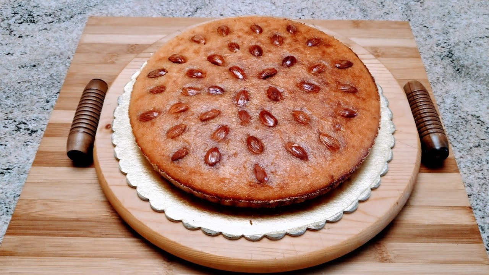
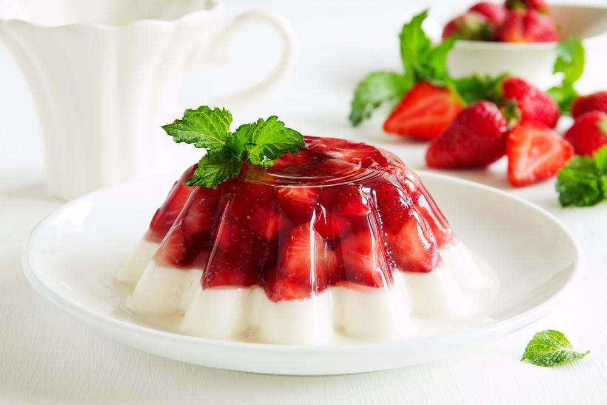
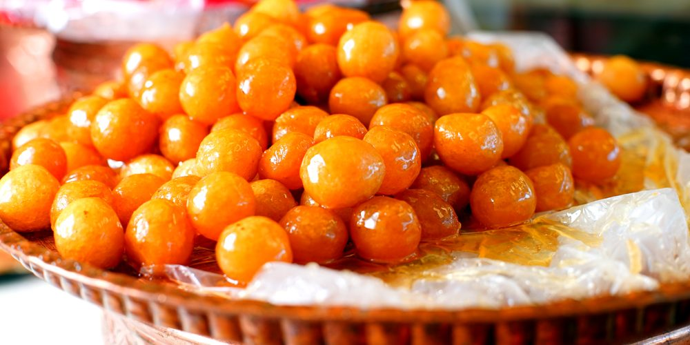
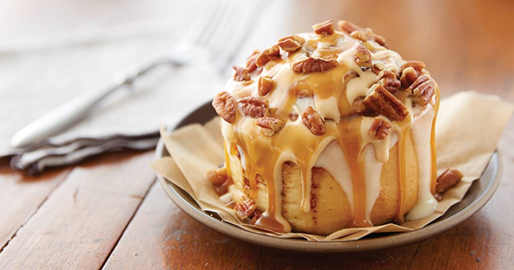

- 2 كوب سميد
- 1 كوب سكر
- 1 كوب زبادي
- نص كوب جوز هند
- 1 كوب حليب
- نص كوب زيت نباتي
- ملعقة صغيرة بيكنج بودر
- لوز للتزيين (اختياري)
مكونات
- في وعاء كبير، اخلطي السميد، السكر، جوز الهند، والبيكنج بودر مع بعض.
- ضيفي الزبادي، الحليب، والزيت النباتي للمكونات الجافة، وامزجيهم كويس لحد ما تتكون عجينة متجانسة.
- اسكبي الخليط في صينية مدهونة بالزيت، وساوي السطح بملعقة.
- اقطعي العجينة في الصينية على شكل مربعات أو مستطيلات، وزيني كل قطعة بلوزة (اختياري).
- دخلي الصينية فرن سخن مسبقًا على درجة حرارة 180 درجة مئوية لمدة 30-35 دقيقة، لحد ما تحمر وتبقى دهبية من فوق.
- للشربات (القطر):
- في حلة، اخلطي السكر والماء وحطيهم على نار متوسطة.
- سيبي الخليط يغلي، وبعدين ضيفي عصير الليمون.
- خلي الشربات يغلي لمدة 10 دقائق، وبعدين شيليه من على النار وسيبيه يبرد شوية.
- بعد ما تطلعي البسبوسة من الفرن، اسكبي الشربات البارد عليها وهي سخنة عشان تتشربه كويس.
- سيبي البسبوسة تهدى وتتشرب الشربات كويس، وبعدين قطعيها وقدميها.
الطريقة:
- - 2 كوب
- - 1/2 كوب سكر
- 2 ملعقة صغيرة بيكنغ باودر-
- - 1/2 ملعقة صغيرة ملح
- - 1/2 ملعقة صغيرة قرفة (اختياري)
- - 100 بيضة
- - 1/2 كوب حليب
- -1/4 كوب زبدة مذابة
- - 1 ملعقة صغيرة فانيليا
- - زيت للقلي
المكونات:
- تحضير العجينة: - في وعاء كبير، اخلط الدقيق، السكر، البيكنغ باودر، الملح، والقرفة. - في وعاء آخر، اخفق البيض، ثم أضف الحليب، الزبدة، والفانيليا. اخلط جيداً. - أضف المكونات السائلة إلى المكونات الجافة واخلط حتى تتكون عجينة ناعمة.
- تشكيل الدونتس: - قم بنقل العجينة إلى سطح مرشوش بالدقيق. افردها بسماكة حوالي 1 سم. - استخدم قطاعة دونتس أو كوب دائري مع قطاعة أصغر لعمل الثقوب في الوسط.
- القلي: - سخن الزيت في مقلاة عميقة على حرارة متوسطة. - اقلي الدونتس حتى يصبح لونها ذهبياً، حوالي 1-2 دقيقة لكل جانب. - استخدم ملعقة مثقوبة لنقلها إلى طبق مغطى بمنشفة ورقية لتصريف الزيت الزائد.
- التزيين: - يمكنك تزيين الدونتس بالسكر البودرة، الشوكولاتة الذائبة، أو أي غلاف تفضله.
طريقة التحضير:

- - 1 كوب دقيق
- - 1/2 كوب ماء
- - 1/4 كوب زبدة أو سمنة
- - 3 بيضات
- - 1 ملعقة صغيرة فانيليا
- - 1 كوب سكر
- - 1/2 كوب ماء
- - 1 ملعقة صغيرة عصير ليمون
- - 1 ملعقة صغيرة فانيليا
المكونات:
للعجينة:
للشربات (القطر):
- - في قدر، اخلط السكر والماء على نار متوسطة.
- - عندما يبدأ في الغليان، أضف عصير الليمون والفانيليا.
- - اتركه يغلي لمدة 10 دقائق حتى يصبح كثيفًا قليلاً. اتركه ليبرد.
- - في قدر، ضع الماء والزبدة ورشة الملح، واتركها على نار متوسطة حتى تغلي.
- - أضف الدقيق دفعة واحدة، وحركه بسرعة حتى تتكون عجينة متماسكة.
- - اترك العجينة تبرد قليلاً، ثم أضف البيض واحدة تلو الأخرى مع الخلط جيداً بعد كل إضافة. يمكنك إضافة الفانيليا أيضًا.
- - ضع العجينة في كيس حلواني مزود برأس نجمي.
- - سخن الزيت في مقلاة عميقة على نار متوسطة.
- - قم بضغط العجينة في الزيت على شكل أصابع أو كرات صغيرة، واقلها حتى تصبح ذهبية اللون.
- - انقلها إلى طبق مغطى بمنشفة ورقية لتصريف الزيت الزائد.
- - اغمر بلح الشام في الشربات البارد لمدة دقيقة، ثم ضعها على طبق التقديم. يمكنك تزيينها بالفستق المجروش إذا رغبت.
طريقة التحضير:
تحضير الشربات:
تحضير العجينة:
تشكيل القوام:
القلي:
التقديم:

- - 1 عبوة من مسحوق الجيلي (بأي نكهة تفضلها)
- - 1 كوب ماء مغلي
- - 1 كوب ماء بارد
- - فواكه مقطعة (اختياري، مثل الفراولة، الأناناس، أو الكيوي)
المكونات:
-
تحضير الجيلي:
- في وعاء، أضف مسحوق الجيلي إلى الماء المغلي. - قم بتحريك المزيج جيدًا حتى يذوب الجيلي تمامًا. -
إضافة الماء البارد:
- أضف الماء البارد إلى المزيج وامزج جيدًا. -
إضافة الفواكه (اختياري):
- إذا كنت ترغب في إضافة فواكه، يمكنك وضع قطع الفواكه في قوالب الجيلي قبل صب السائل. صب الجيلي:
- صب مزيج الجيلي في قوالب أو كؤوس التقديم.-
التبريد:
- ضع القوالب في الثلاجة واتركها لتتجمد لمدة 4 ساعات على الأقل، أو حتى تصبح صلبة. -
التقديم:
- بعد أن يتجمد الجيلي، يمكنك تقديمه كما هو، أو زينته بكريمة خفق أو قطع فواكه إضافية.
طريقة التحضير:

- - 2 كوب دقيق
- - 1 ملعقة صغيرة خميرة فورية
- - 1 ملعقة صغيرة سكر
- - 1/2 ملعقة صغيرة ملح
- - 1 1/2 كوب ماء دافئ
- - 1/4 ملعقة صغيرة كربونات الصوديوم (اختياري)
المكونات:
للعجينة:
- - 2 كوب سكر
- - 1 كوب ماء
- - 1 ملعقة صغيرة عصير ليمون
- - 1 ملعقة صغيرة فانيليا
للشربات (القطر):
- - في قدر، اخلط السكر والماء على نار متوسطة.
- - عندما يبدأ في الغليان، أضف عصير الليمون والفانيليا.
- - اتركه يغلي لمدة 10 دقائق حتى يصبح كثيفًا قليلاً. اتركه ليبرد.
- - في وعاء، اخلط الدقيق، الخميرة، السكر، والملح.
- - أضف الماء الدافئ تدريجياً مع التحريك حتى تتكون عجينة سائلة ولينة. إذا كنت تستخدم كربونات الصوديوم، أضفها الآن.
- - غطِ الوعاء واترك العجينة في مكان دافئ لمدة ساعة حتى تخمر.
- - سخن الزيت في مقلاة عميقة على نار متوسطة.
- - استخدم ملعقة أو كيس حلواني لعمل دوائر صغيرة من العجينة في الزيت الساخن. اتركها تقلى حتى تصبح ذهبية اللون.
- - بعد القلي، اخرج الزلابية من الزيت وضعها مباشرة في الشربات لمدة دقيقة أو اثنتين.
- - قدّم الزلابية دافئة مع رشة من السكر البودرة إذا رغبت.
طريقة التحضير:
1. تحضير الشربات:
2. تحضير العجينة:
3. القلي:
4. الغمس في الشربات:
5. التقديم:

- للعجينة:
- - 4 أكواب دقيق
- - 1/2 كوب سكر
- - 1 ملعقة صغيرة ملح
- - 1 ملعقة كبيرة خميرة فورية
- - 1 كوب حليب دافئ
- - 1/2 كوب زبدة مذابة
- - 2 بيضة
المكونات:
- - 1/2 كوب سكر بني
- - 2 ملعقة كبيرة قرفة
- - 1/2 كوب زبدة (طرية)
- - 1 كوب سكر بودرة
- - 2 ملعقة كبيرة حليب
- - 1/2 ملعقة صغيرة فانيليا
للحشوة:
للتزيين (الصلصة):
- - في وعاء كبير، اخلط الدقيق والسكر والملح والخميرة.
- - أضف الحليب الدافئ، الزبدة المذابة، والبيض. اخلط جيدًا حتى تتكون عجينة.
- - اعجن العجينة لمدة 5-10 دقائق حتى تصبح ناعمة ومطاطية.
- - ضع العجينة في وعاء مدهون بالزبدة، غطها، واتركها لتخمر في مكان دافئ لمدة ساعة تقريبًا.
- - في وعاء، اخلط السكر البني مع القرفة والزبدة حتى تتكون عجينة ناعمة.
- - بعد أن تخمر العجينة، قم بفردها على سطح مرشوش بالدقيق على شكل مستطيل.
- - وزع حشوة القرفة بالتساوي على العجينة.
- - قم بلف العجينة على شكل رول طويل ثم قطعها إلى شرائح بسمك 2-3 سم.
- - ضع الشرائح في صينية مدهونة بالزبدة واتركها لتخمر لمدة 30 دقيقة.
- - سخن الفرن على 180 درجة مئوية.
- - اخبز السينابون لمدة 20-25 دقيقة حتى يصبح ذهبياً.
- - في وعاء، اخلط السكر البودرة مع الحليب والفانيليا حتى تتكون صلصة ناعمة.
- - بعد أن يبرد السينابون قليلاً، قم بصب الصلصة فوقه. قدّمها دافئة واستمتع بها!